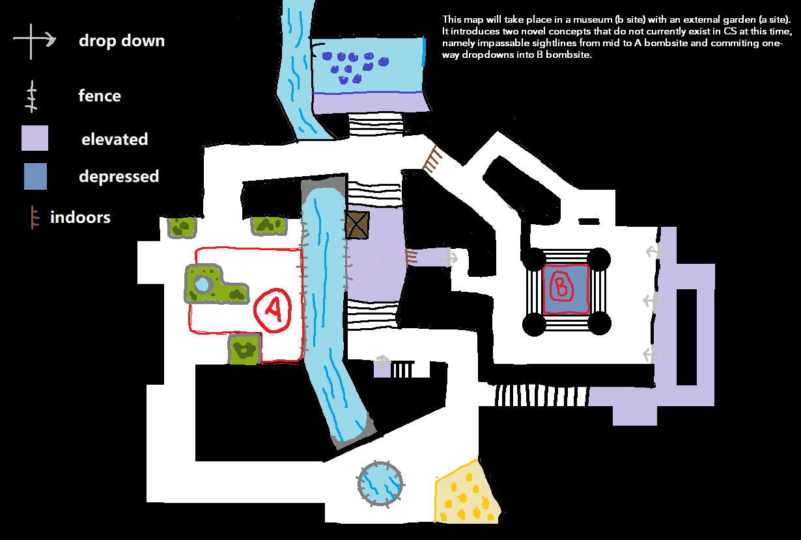
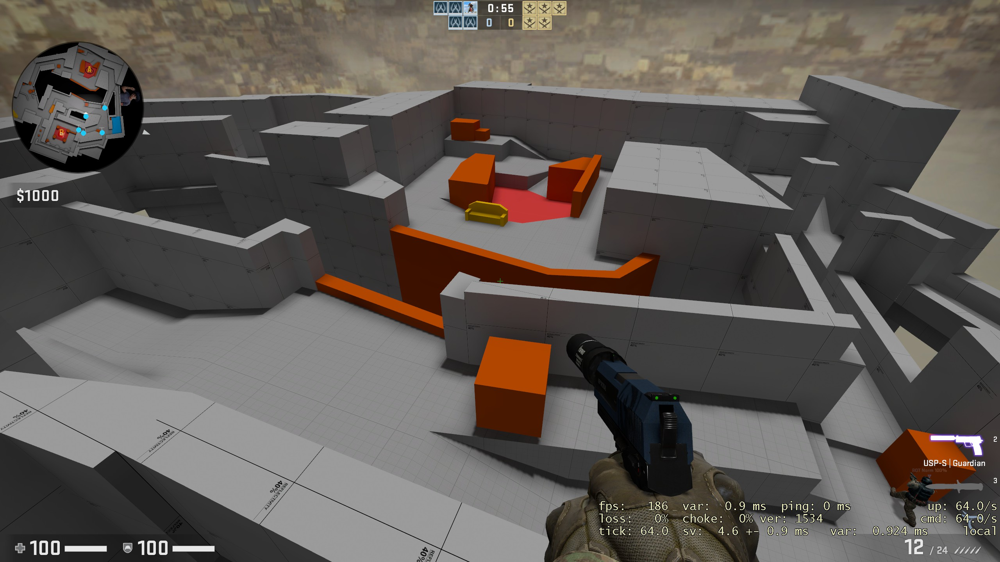
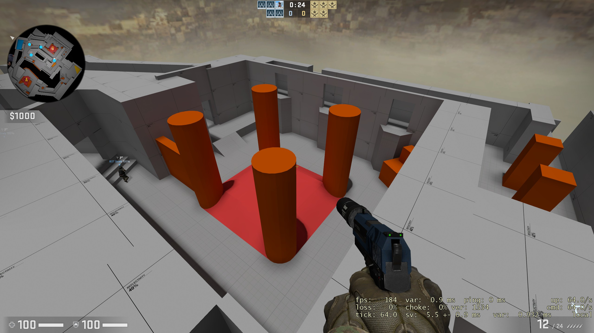

Context
The Counter-Strike games captivated my attention thoughout my most formative years in high-school and early college. During this time, I helped to build Esports in my community by playing a pivitol role in the formation of a Counter-Strike team for my school's esports club.
Recently, I watched the IEM 2022 Rio De Janero Major where I witnessed some the ingenious strat calling from the legendary in game leaders Cadian and Jame in the decisive playoff stage. Their performances during the grand final relit the same spark of obsession that consumed my youth. This left me only one option to scratch such an itch—I opened the Hammer editior and went to work.
Level Design
The whiteboard stage of the project was fairly straightforward as the idea for the map came to me in a dream. In it, I was defending A-site from a mid-lane on a greyboxed level but I could only see into the site, unable to traverse the opening to the objective. This idea stuck with me as it has, to my knowledge, never been adequately explored in a competitve style map for CS:GO. My concept for B-site also introduces the additional novelty of a one-way drop zone which serves as the only T-side main access to the objective.
In comparision to the strategic challenge of the middle and A-side of Exhibition, B-site feels like a malestrom of fun-filled chaos. Both T's and CT's collide in a chaotic combination of verticality and openness that which can only be desribed by one of my testers as "it's fun—it's just fun". Honestly, the fights on this site felt unpredictable but extremely fair due to the punishing positional dillema that T's are put in with the prominent one-way feature.
